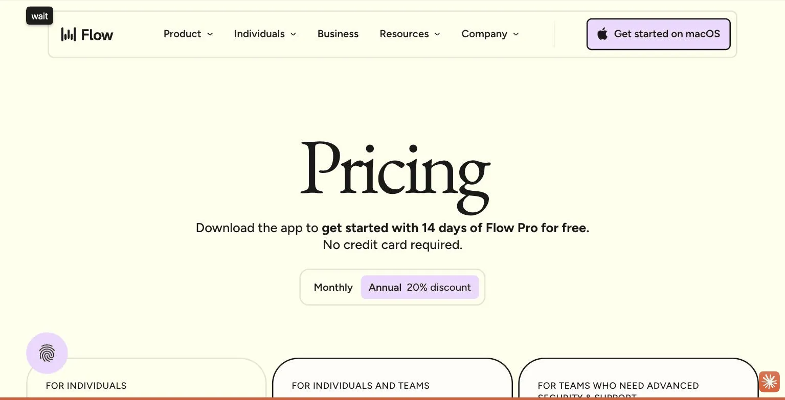
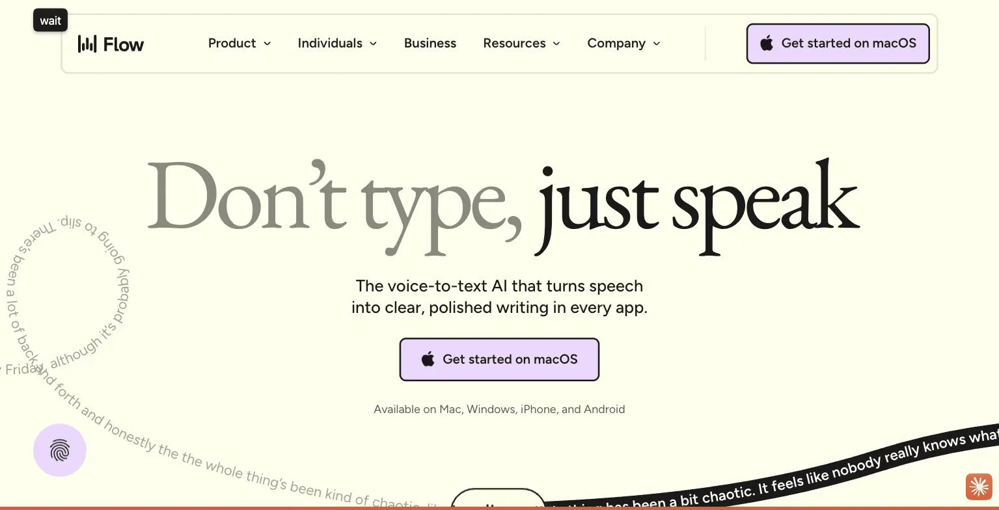

Wispr Flow
Wispr Flow is voice dictation that turns speech into clean, punctuated writing inside whatever app you're already using, not a single app's built-in feature. The free Basic plan caps out at 2,000 words a week on desktop; Pro is $12/user/month billed annually for unlimited words on every platform plus voice-driven command-mode editing. The site's verdict is this is one of the easiest tools on this list to start using immediately, and the 14-day free Pro trial requires no credit card, making it low-risk to test on your actual workflow before paying.
Wispr Flow turns your rambling into clean prose, which either makes it a great writing tool or an uncomfortable mirror. 2,000 free words a week should cover most people's stream of consciousness.
- Value for price8.0/10
- Capability7.0/10
- Ease of use9.0/10
- Trial safety8.5/10

Wispr Flow runs in the background and activates with a keyboard shortcut or a floating mic button, listening in whatever text field currently has focus, whether that's an email client, a notes app, or a browser form.

Wispr Flow's whole pitch is in its tagline: don't type, just speak. The interface shows raw, run-on spoken sentences, complete with hedging and false starts, transformed into clean, correctly punctuated writing in real time, which is the actual product: not a transcript, a rewrite.
Example from wisprflow.ai. Not independently tested by Solos Gems.Pricing breakdown
- Basic (Free): 2,000 words/week on Mac or Windows, 1,000 words/week on iPhone, unlimited on Android (limited time), custom dictionary and snippets
- Pro ($12/user/mo billed annually): Unlimited words on Mac, Windows, iPhone, and Android, prioritized support, command mode for voice editing, team collaboration features
- Enterprise (custom pricing): Everything in Pro plus SOC 2 Type II and ISO 27001 compliance, enforced HIPAA compliance, SSO/SAML, dedicated support
Why the free trial is actually low-risk
Every new account gets a 14-day Pro trial with no credit card required, converting to the free Basic plan automatically if you don't upgrade. That removes the usual trial anxiety of forgetting to cancel before a card gets charged, and two weeks of unlimited dictation is enough to know whether voice typing actually fits how you write emails, notes, or messages day to day.
Pros
- Works system-wide in any app, not locked to one platform
- 14-day free Pro trial requires no credit card
- Automatically cleans up filler words and false starts, not a raw transcript
Cons
- Free tier's 2,000 words/week runs out fast for daily heavy use
- Accuracy depends on having a decent microphone and a reasonably quiet room
- Per-seat Pro pricing adds up quickly for a team, not just a solo user
Common questions
Is Wispr Flow's free tier enough for daily use?
For light use, yes, but 2,000 words a week runs out fast if you're dictating heavily every day. Heavy daily users will hit the cap and want the Pro trial.
Do I need a good microphone for accurate dictation?
Yes, accuracy depends on having a decent microphone and a reasonably quiet room, test it in your actual working environment before assuming lab-quality accuracy.
Is the free trial risky to start?
No, the 14-day free Pro trial requires no credit card, making it low-risk to test on your actual daily workflow before deciding whether to subscribe.